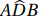
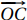
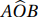
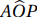
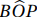
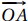
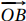
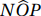
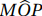

2.3 Pontos Notáveis de um Triângulo
O baricentro, o circuncentro, o ortocentro e o incentro são chamados pontos notáveis de um triângulo.
A seguir, são apresentados os quatro pontos notáveis citados na definição acima.
2.3.1 Baricentro
Dado um triângulo de lados a = BC, b = AC e c = AB e seus respectivos pontos médios: Ma, Mb e Mc, chamam-se medianas os segmentos definidos pelos pontos médios de um lado do triângulo e seu vértice oposto, denotadas por ma = AMa, mb = BMb e mc = CMc.
O Teorema 2.16 é necessário para as demonstrações dos Teoremas 2.17 e 2.18.
Se três ou mais retas paralelas determinam segmentos congruentes em uma transversal então determinam segmentos congruentes em qualquer outra transversal.
Sejam as retas r, s e t paralelas entre si
e sejam w e z duas transversais. Sejam A,
B e C os pontos de interseção da reta w,
respectivamente, com as retas r, s e t,
tais que AB = BC. Definamos A', B' e
C' como os pontos de interseção da reta z, respectivamente, com as retas
r, s e t, conforme a Figura 2.16:
Queremos mostrar que, se AB = BC, então A'B' = B'C'.
A partir do ponto A', tracemos um segmento paralelo ao segmento AB, que toca em BB' no ponto P. A partir do ponto B' tracemos um segmento paralelo ao segmento BC que toca o segmento CC' no ponto Q.
Deste modo temos que AB = A'P e BC = B'Q, pois AA'PB e BB'QC são paralelogramos. Logo temos A'P = B'Q, portanto a razão entre eles é igual a 1.
Observando os triângulos ΔA'PB' e ΔB'QC', temos que seus ângulos correspondentes são congruentes, logo são semelhantes pelo caso ângulo-ângulo-ângulo. Uma vez que a razão de proporcionalidade entre eles é igual a 1, esses triângulos são congruentes.
Portanto temos A'B' = B'C'.
O Teorema Fundamental da Proporcionalidade (teorema 2.17) enunciado a seguir, em seu conceito geral, trata de retas paralelas com transversais, no entanto neste contexto, considera-se sua aplicação em um triângulo.
Se uma reta paralela a um dos lados de um triângulo corta os outros dois lados em pontos distintos, então ela os divide na mesma razão.
Medir um segmento significa comparar o comprimento deste com o comprimento de um outro, tomado como unidade. O resultado desta comparação
é um número real. Neste sentido, consideremos os casos em que: $$\frac{AB}{AD} \text{ é um número racional e } \frac{AB}{AD} \text{ é um número irracional.}$$
Para ambos casos, considere a Figura 2.18 abaixo:
Nesta figura, sejam as retas r, s e t paralelas entre si e t é a reta suporte do lado BC do triângulo. Queremos mostrar que $$\frac{AD}{AE} = \frac{DB}{EC}.$$
1º caso:
$$\frac{AB}{AD} \text{ é um número racional.}$$
Neste caso temos que estes segmentos tem medidas racionais, logo existe um segmento de comprimento k que cabe exatamente um número inteiro de vezes, respectivamente m e n, nos segmentos AD e DB. Assim temos que AD = mk e DB = nk.
Agora, tracemos retas paralelas à reta t que passam pelos extremos dos segmentos de comprimento
k, até que encontrem o lado AC e, aplicando o Teorema 2.16, seja k'
o comprimento dos segmentos definidos por estas paralelas sobre o lado AC.
Portanto, temos que AE = mk' e EC = nk'. Podemos concluir que $$\frac{AD}{DB} = \frac{AE}{EC} = \frac{m}{n} \quad \Leftrightarrow \quad \frac{AD}{AE} = \frac{DB}{EC}.$$
2º caso:
$$\frac{AB}{AD} \text{ é um número irracional.}$$
Podemos imaginar, sem prejuízo na generalização, que o segmento DB tenha sido dividido em n partes congruentes, tais que o comprimento seja um número k. Assim temos:
Traçando retas paralelas ao lado BC a partir dos extremos destes segmentos, e aplicando o Teorema 2.16, temos que EC se divide em n segmentos congruentes, e seja k' o comprimento deles. Assim temos:
Agora, traçando segmentos de comprimento k, a partir do ponto D e em direção ao ponto A, temos que tais segmentos cabem um número inteiro m de vezes no segmento AD e tal que:
e após traçarmos retas paralelas ao lado BC passando por seus extremos, temos, pelo Teorema 2.16, m segmentos em AE, tais que:
A partir das equações (2.3) e (2.5), temos que a razão $$\frac{AD}{DB}$$ é um número tal que $$\frac{m}{n} < \frac{AD}{DB} < \frac{(m + 1)}{n}.$$
Analogamente, a partir das equações (2.4) e (2.6), temos que a razão $$\frac{AE}{EC}$$ é um número tal que $$\frac{m}{n} < \frac{AE}{EC} < \frac{(m + 1)}{n}.$$
Finalmente, temos que $$\frac{m + 1}{n} - \frac{m}{n} = \frac{1}{n}$$ e podemos tomar um valor n suficientemente grande para que $$\frac{1}{n} \rightarrow 0,$$ ou seja, $$\frac{1}{n}$$ será tão pequeno quanto se deseje, o que permite concluir que
$$\frac{AD}{DB} = \frac{AE}{EC}.$$
Portanto, temos $$\frac{AD}{AE} = \frac{DB}{EC}.$$
As medianas de um triângulo são concorrentes em um ponto que dista de cada vértice dois terços da distância deste vértice ao ponto médio do lado oposto.
Consideremos o triângulo ΔABC e os respectivos pontos médios: Ma, Mb e Mc. Consideremos também as retas r, s, t, u e v, todas paralelas entre si.
Inicialmente, seja t a reta suporte da mediana BMb. Além disso, r, s, u e v passam respectivamente pelos pontos: A, Mc, Ma e C.
Temos que AMb ≡ MbC pois Mb é ponto médio do lado AC, e seja P o ponto de interseção entre as medianas AMa e CMc. Tal ponto existe, pois elas não podem ser paralelas.
Observando os triângulos ΔABMb e ΔABP, temos pelo Teorema 2.16 que a reta s divide os segmentos AMb e AP em duas partes congruentes cada um, pois Mc é ponto médio do lado AB. Analogamente, temos que a reta u divide os segmentos MbC e CP em duas partes congruentes cada um, pois Ma é ponto médio de BC. Deste modo, temos que as quatro partes obtidas entre as retas paralelas sobre o lado AC são congruentes, consequentemente, as três partes obtidas na divisão da mediana AMa e da mediana CMc também são. Em outras palavras, sendo P o ponto de interseção entre essas medianas, temos que P divide cada uma das medianas AMa e CMc na proporção 2/3 ou seja, $$AP = \frac{2}{3} \cdot AM_a \text{ e } CP = \frac{2}{3} \cdot CM_c.$$
Analogamente, tomando a reta t contendo a mediana AMa, se P' é o ponto de interseção entre as medianas BMb e CMc, obtemos que $$BP' = \frac{2}{3} BM_b \text{ e } CP' = \frac{2}{3} CM_c.$$
Uma vez que $$CP = \frac{2}{3} \cdot CM_c \text{ e } CP' = \frac{2}{3} \cdot CM_c,$$ temos que P = P'.
Portanto, as medianas concorrem em um único ponto e tal ponto as divide na razão 2/3.
O ponto em que as medianas são concorrentes chama-se baricentro do triângulo.
O Teorema 2.19 enunciado a seguir será necessário na demonstração do Corolário 3.44 e é consequência do Teorema de Stewart, apresentado em [1] (pág. 152), particularmente quando o segmento em questão é uma mediana.
O dobro do quadrado da mediana m de um triângulo ΔABC é igual à soma dos quadrados dos dois lados envolvidos menos a metade do quadrado do lado referente à mesma mediana, ou seja: $$2m_a^2 = b^2 + c^2 - \frac{a^2}{2}$$ em que a, b e c são a medida dos lados do triângulo e ma é a mediana considerada [1].
A demonstração a seguir utiliza a Lei dos Cossenos ([3] pág. 229) e o fato de que $$cos\alpha + cos\theta = 0 \Leftrightarrow \alpha + \theta = 180^{\circ}.$$
Seja um triângulo ΔABC, de lados cujas medidas são a, b
e c, respectivamente, BC, AC e AB,
com mediana ma = AD, conforme Figura 2.24:
Se α =  e θ = temos que α + θ = 180º.
Aplicando a Lei dos Cossenos nos triângulos ΔADB e ΔADC, tem-se:
$$c^2 = m_{a}^2 + \dfrac{a^2}{4} - m_{a}\cdot a\cdot cos\alpha$$ e $$b^2 = m_{a}^2 + \dfrac{a^2}{4} - m_{a}\cdot a\cdot cos\theta.$$ Somando as equações membro a membro, temos: $$a^2 + b^2 = 2m_{a}^2 + \dfrac{a^2}{2} - m_{a}\cdot a(cos\alpha + cos\theta).$$ Assim temos $$a^2 + b^2 = 2m_{a}^2 + \dfrac{a^2}{2}$$ e finalmente, $$2m_{a}^2 = a^2 + b^2 - \dfrac{a^2}{2}.$$
2.3.2 Circuncentro
A mediatriz de um segmento AB é a reta perpendicular a este segmento, passando pelo ponto médio do mesmo.
Todo segmento tem exatamente um ponto médio, e pelo ponto médio passa exatamente uma reta perpendicular. Assim, a mediatriz é única (princípio da unicidade).
Os lados de um triângulo são também segmentos e, com isso, podemos associar a cada um deles suas mediatrizes.
As mediatrizes dos lados de um triângulo são concorrentes em um ponto equidistante dos três vértices do triângulo.
Seja um triângulo ΔABC e sejam r, s e t as mediatrizes, respectivamente, dos lados AB, AC e BC. Tomando tais retas duas a duas, a posição relativa entre elas é de concorrência.
De fato, se as retas r e s, por exemplo, fossem paralelas, os pontos A, B e C do triângulo seriam colineares e o triângulo ΔABC não estaria definido. Se as retas r e s fossem coincidentes, por um mesmo ponto médio estariam duas mediatrizes, contrariando o princípio da unicidade das mediatrizes. Portanto elas concorrem em um ponto O. Escolhendo outras duas dessas retas, o resultado é análogo.
Pelo Teorema 2.4, como o ponto O está na mediatriz do segmento AC, tem-se OA = OC, e como O está na mediatriz de AB, tem-se OB = OA. Portanto, OA = OB = OC.
Assim, é possível traçar uma circunferência de centro em O, de raio r = OA = OB = OC, que passa pelos vértices A, B e C.
Existe uma única circunferência que passa por três pontos não colineares (a). Todo triângulo é inscritível (b).
O ponto de encontro das mediatrizes, que é o centro da circunferência circunscrita a um triângulo, é chamado circuncentro desse triângulo.
2.3.3 Ortocentro
Todo triângulo possui exatamente três alturas relativas. No contexto desta seção, a palavra altura será definida com a seguinte denotação:
Dado um triângulo ΔABC e seja Ha o pé da perpendicular baixada a
partir do vértice A sobre o lado BC, oposto a ele, ou sobre a reta
 . O segmento AHa é chamado de
altura relativa ao lado BC ou ao vértice A.
. O segmento AHa é chamado de
altura relativa ao lado BC ou ao vértice A.
Por outro lado, a palavra altura pode indicar:
- um número, que é o comprimento do segmento perpendicular;
- a reta que contém o segmento perpendicular.
No conceito (2), as alturas concorrem em um único ponto.
As três alturas de um triângulo são concorrentes.
Seja um triângulo ΔABC e AHa a altura relativa ao lado BC. Sejam os pontos D, E e F, tais que DE e BC, DF e AC, e EF e AB são pares de segmentos paralelos, conforme ilustração:
Note que ocorrem os paralelogramos ADBC, ABCE e ABFC. Logo podemos escrever as igualdades: AC = DB = BF, DA = AE = BC e AB = EC = CF. Neste sentido, A é ponto médio de DE, assim como C é de EF e B é de DF.
Tomando a altura relativa ao vértice A, uma vez que A é ponto médio, tem-se que esta altura é mediatriz do lado DE. Analogamente a altura relativa ao vértice B e a altura relativa ao vértice C são, respectivamente, mediatrizes dos lados DF e EF. Deste modo, as alturas do triângulo ΔABC correspondem respectivamente às mediatrizes do triângulo ΔDEF. Pelo Teorema 2.20, elas concorrem em um único ponto.
O ponto de encontro das três alturas é chamado de ortocentro do triângulo.
2.3.4 Incentro
Nesta seção, o conceito de bissetriz fica restrito a um segmento associado a um vértice do triângulo. Na Seção 3.2, Definição 3.2 apresentam-se outras propriedades sobre as bissetrizes, estendendo esses conceitos ao ângulo entre duas retas.
Uma semirreta  é uma bissetriz de um ângulo  se C está no interior de e ≡ .
A bissetriz de um ângulo, exceto sua origem, é o conjunto dos pontos do interior do ângulo equidistantes dos lados do ângulo.
Seja o ângulo e P um ponto em sua bissetriz. Temos que m() = m(). Sejam N e M, respectivamente, os pés das perpendiculares do ponto P sobre as semirretas  e . Temos que m() = m() = 90º. Com isso, os triângulos ΔOPN e ΔOPM são congruentes, pelo caso lado, ângulo e ângulo oposto, pois OP é lado comum. Assim, temos que PN = PM.
Por outro lado, seja P um ponto no interior do ângulo , e N e M, respectivamente, os pés das perpendiculares do ponto P nas semirretas e tais que PN = PM. Temos que OP é hipotenusa comum nos triângulos ΔOPN e ΔOPM. Pelo caso CH (cateto, hipotenusa), esses triângulos são congruentes, logo m() = m(). Portanto, OP está na bissetriz do ângulo .
Uma bissetriz de um triângulo é um segmento da bissetriz de cada ângulo do triângulo, compreendido entre o vértice correspondente e o lado oposto.
Todo triângulo, no conceito que associa uma bissetriz a um vértice (Definição 2.22), possui três bissetrizes.
As bissetrizes dos ângulos de um triângulo são concorrentes em um ponto equidistante dos três lados do triângulo.
Considere um triângulo ΔABC e suas bissetrizes. Tomando-as duas a duas, não faz sentido ocorrer paralelismo ou coincidência, logo elas são concorrentes. Vamos considerar as bissetrizes do vértice A = AD, do vértice B = BE e do vértice C = CF, e seja I o ponto onde as primeiras concorrem.
Como o ponto I está na bissetriz AD (Figura 2.29, I equidista de AC e de AB, mas I também está na bissetriz BE, logo também equidista de AB e BC. Assim, as distâncias IE, ID e IF do ponto I até os lados AB, AC e BC, são iguais; portanto I está na interseção das três bissetrizes e é equidistante dos três lados do triângulo.
Em consequência, vem o seguinte corolário:
- Existe uma única circunferência que tangencia os três lados de um triângulo.
- Todo triângulo é circunscritível.
O ponto de encontro das bissetrizes, que é também o centro da circunferência inscrita a um triângulo, é chamado Incentro do triângulo.